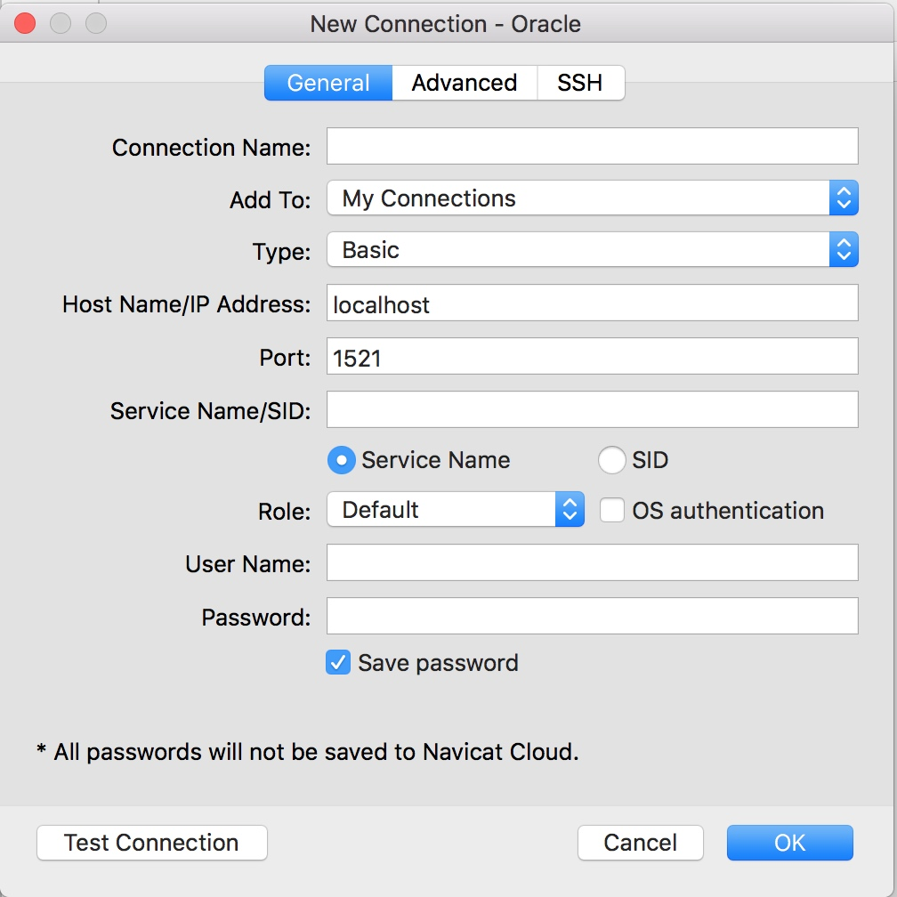

Oracle中SID与ServiceName的渊缘
介绍 SID ServiceName的关系
背景
使用 Navicate Premium 创建新的oracle连接时，看到有 SID和Service Name 选项，不了解，故做如下搜索

SID
- SID是实例名，实例名指的是用于响应某个数据库操作的数据库管理系统的名称
- 实例名是由初始化参数文件的参数instance_name决定的。如果这个参数不被指定(即instance_name没有被指定为任何值)，那么实例的名字由该用户的环境变量ORACLE_SID（注意这里是大写）决定
- SID是唯一标识你数据库的实例名称，用来登录你标识的数据库
ServiceName
- SERVICE_NAME指的是listener中的全局数据库名：这个名字是由listener.ora中GLOBAL_DBNAME参数决定的。这个名字代表的是客户端连接到数据库时，tnsnames.ora中SERVICE_NAME参数所对应的值
- ServiceName主要是客户端连接DB的，通过客户端的Tnsnames.ora文件设置的
- Service_name：该参数是由oracle8i引进的。在8i以前，使用SID来表示标识数据库的一个实例，但是在Oracle的并行环境中，一个数据库对应多个实例，这样就需要多个网络服务名，设置繁琐。为了方便并行环境中的设置，引进了Service_name参数，该参数对应一个数据库，而不是一个实例，而且该参数有许多其它的好处。该参数的缺省值为Db_name. Db_domain，即等于Global_name。一个数据库可以对应多个Service_name，以便实现更灵活的配置。该参数与SID没有直接关系，即不必Service name 必须与SID一样